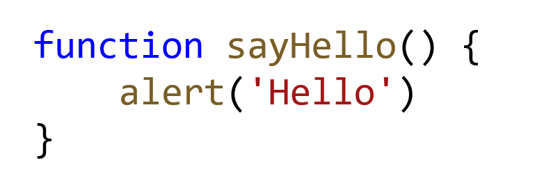

כ
מתכנת ותיק יצא לי לאורך השנים לתכנת בשפות תכנות רבות ומגוונות, נוכחתי לדעת שבכל השפות יש בסך הכל שבעה כלי יסוד.
לעיתים כלליי התחביר יהיו מעט שונים, אך בכל שפות התכנות, החל משפות היסוד כמו אסמבלר ועד השפות המודרניות ביותר כמו Go, Python, Scala או Javascript יש בסך בכל אותם שבעה כלים בסיסים. שליטה בהם היא בעצם שכבת המיומנות הבסיסית ביותר של המתכנת.
נתחיל מהכלי הראשון – משתנים
משתנה זה בסך הכל קופסא עם שם, שניתן לאכסן בתוכה ערך כלשהו:
בשפת Javascript, מגדירים משתנים בפעם הראשונה שמשתמשים בהם כך:
ביטויים
בפשטות, אם יש לנו שני משתנים מספריים (קופסאות המכילות כרגע מספרים), ניתן לכתוב ביטויים חשבוניים:
ניתן להשתמש באופרטור + גם כדי לחבר יחד שתי מחרוזות תווים:
מלבד הביטויים החשבוניים, ניתן לכתוב גם ביטויים לוגיים – אלה ביטויים שערכם הוא אמת או שקר:
תנאים
הביטויים הלוגים המופיעים בטבלה למעלה משמשים אותנו בקוד על מנת לייצר תנאים, הנה דוגמא:
נעבור לפונקציות
פונקציה היא דרך לארוז מספר פקודות ביחד, כדי שיהיה ניתן להפעילם כפעולה אחת,
הנה פונקציה פשוטה מאוד

לולאות
כשאנו רוצים לבצע פעולה מסויימת שוב ושוב, נשתמש בלולאה, יש מספר סוגים של לולאות, כולן פשוטות, הסוג הבסיסי ביותר נקרא לולאת WHILE:
הנה דוגמא ללולאה שסופרת עד 10:
מערכים
פעמים רבות, נרצה לשמור מספר ערכים בצימוד אחד לשני
למשל שמות של חיות מחמד, לשם כך נשתמש במערך:
אובייקטים
האפליקציות שנכתוב כמתכנתים מנהלות בדרך כלל מידע של יישויות מסויימות, נייצג אותן בקוד שלנו באמצעות אובייקטים:
הנה עוד שתי דוגמאות:
לסיכום
פגשנו את שבעת כלי היסוד שעומדות ביסודן של כלל שפות התכנות, ראינו כמה הכלים הללו פשוטים ונגישים, כשלומדים לעשות בהם שימוש נכון – ניתן לכתוב תוכניות מחשב מכל הסוגים.
* הנה עוד כמה שפות תכנות שתכנתי בהם וכולם מבוססים על אותם שבעה כלים
Basic, Pascal, PLI, Rexx, Ada, VB, C, C++, Java, Scala, C#, PHP, Pearl, Python, PHP, Ruby, Go
לרוצים להמשיך ולהעמיק, מוזמנים לצפות בפלייליסט קצר ועוצמתי על
יסודות התכנות
מאמרים נוספים
פרונטאנד - בקאנד ומה שביניהם
בעברי הובלתי את קורס התכנות של ממר"ם מספר שנים והכשרתי מאז אלפי
מתכנתים.
הרבה אנשים שואלים אותי איך כדאי להכנס לעולם הפיתוח וההייטק, ואני עונה שהכי כדאי ללמוד את המקצוע
המבוקש
ביותר בתעשיה כיום - Full Stack Developer...
למאמר המלא
האם תואר במדעי המחשב נדרש כדי להשתלב כמתכנתים בהייטק
בעבר, תואר במדעי המחשב היה תנאי די הכרחי על מנת להשתלב כמתכנת (למעט יוצאי ממר"ם שנחטפו לעבודה כך
או
כך) אך המציאות השתנתה וכיום במיטב החברות, התואר הפך להיות מרכיב זניח ביחס לאלמנטים אחרים כגון...
למאמר המלא
יש ChatGPT - עדיין כדאי ללמוד תכנות ב-2023?
למידת מכונה (Machine Learning - לעיתים מכונה גם למידה חישובית) היא תחום במדעי המחשב העוסק בפיתוח
אלגוריתמים המיועדים לאפשר למחשב ללמוד מתוך דוגמאות, ולבצע משימות חישוביות בהן התכנות הקלאסי אינו
אפשרי...
למאמר המלא